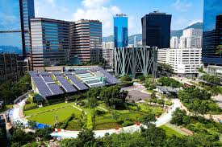
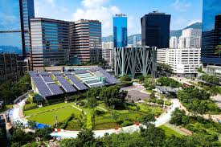

Proyecto solar
Descripción de un proyecto de energía solar en el norte del pais que busca incrementar la generación renovable.

Hidrógeno Verde
Desarrollo de infrastructura para la producción de Hidrógeno Verde como combustible limpio para la industria.

Parque Eólico
Implementacion de un parque eólico con tecnologías que mejoren la eficiencia en los procesos de generación.

Transformación Productiva
innovación tecnológica aplicada a la transformación productiva en comunidades rurales.
 

Páneles Solares Urbanos
Proyecto de páneles solares en áreas urbanas para maximiar el aprovechamiento de energía en las ciudades.